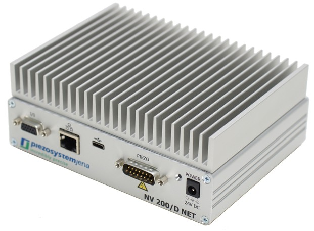

Introduction
The NV200 Python library provides a Python interface to control the NV200/D Compact Amplifier from piezosystem Jena. It supports communication with the device via both Ethernet and USB interfaces.
The library offers an asynchronous API using Python’s async and await syntax, enabling integration
with asynchronous applications.
Using an asynchronous interface allows your program to perform other tasks while waiting for the
NV200 device to respond, improving efficiency in applications that handle multiple concurrent operations
or require responsive user interfaces. Additionally, async / await makes it easier to communicate
with multiple NV200 devices simultaneously without blocking execution.
For more information on Python’s asynchronous programming features, see the official documentation.
Key features include:
Asynchronous communication based on
aioserialandtelnetlib3Functions to query and set the device position
Support for the NV200 data recorder functionality
Interface for the NV200 waveform generator
This library is intended for users who want to control the NV200/D controller programmatically from Python.